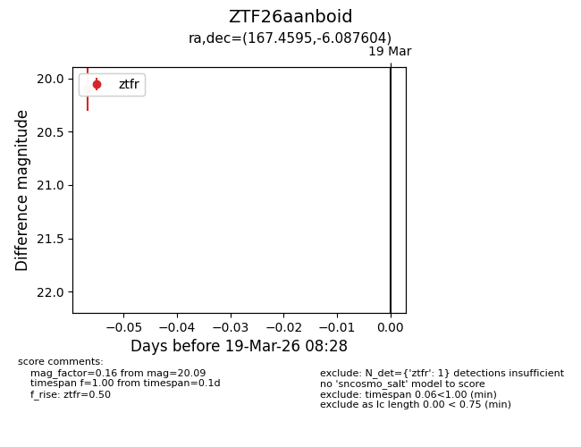
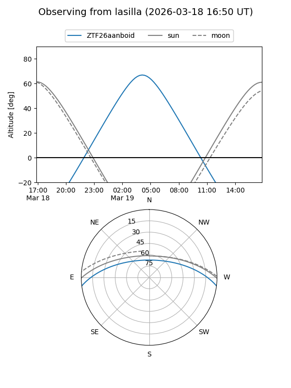
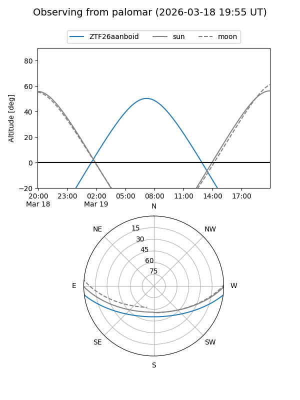

ZTF26aanboid
Target ZTF26aanboid at 2026-03-19 08:31
Aliases and brokers:
FINK: link
Lasair: link
ALeRCE: link
alt names
ZTF26aanboid (ztf,fink_ztf)
Coordinates:
equatorial (ra, dec) = 167.4595,-6.08760
equatorial (HMS+DMS) = 11:09:50.27,-06:05:15.38
galactic (l, b) = (262.6900,+48.68292)
Flags:
Photometry:
last ztfr=20.09
1 ztfr detections
Lightcurve

Visibility


Additional plots